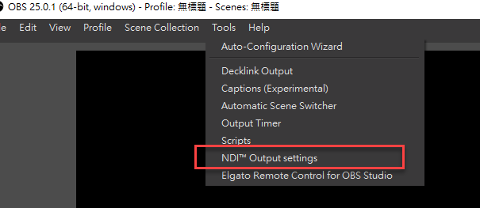
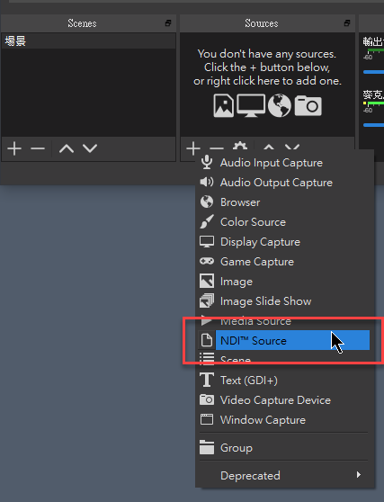
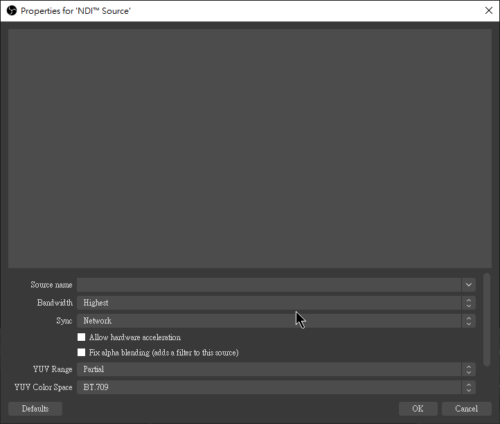
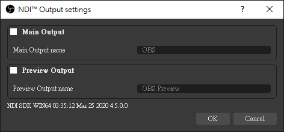
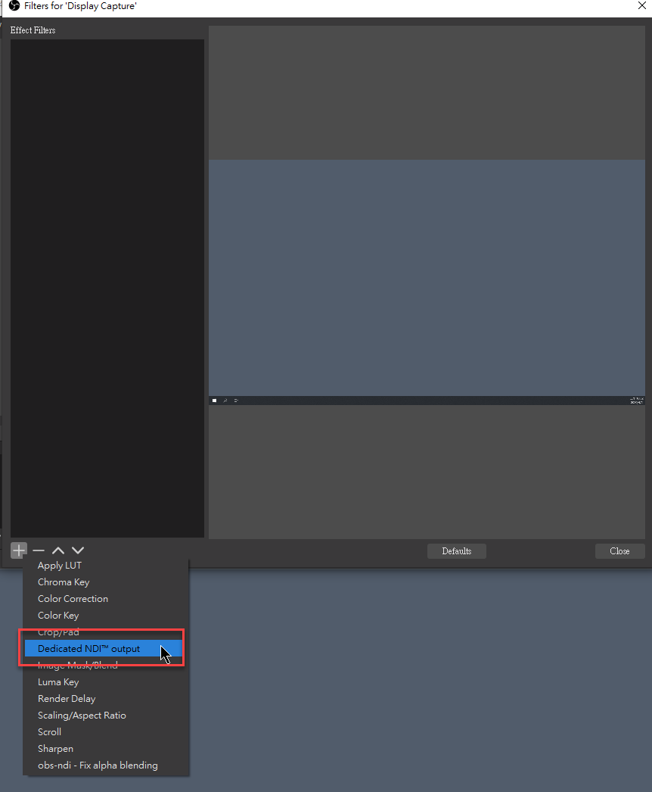
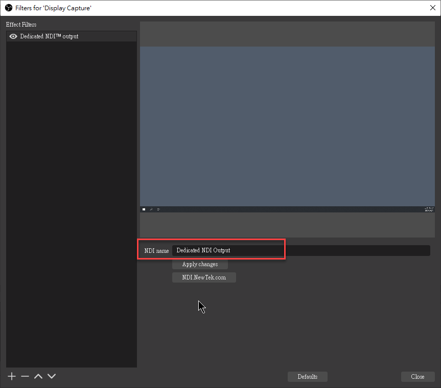
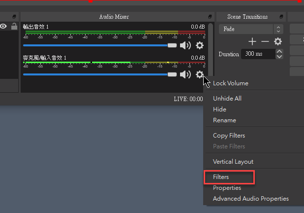
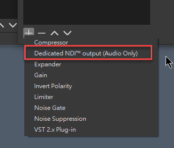
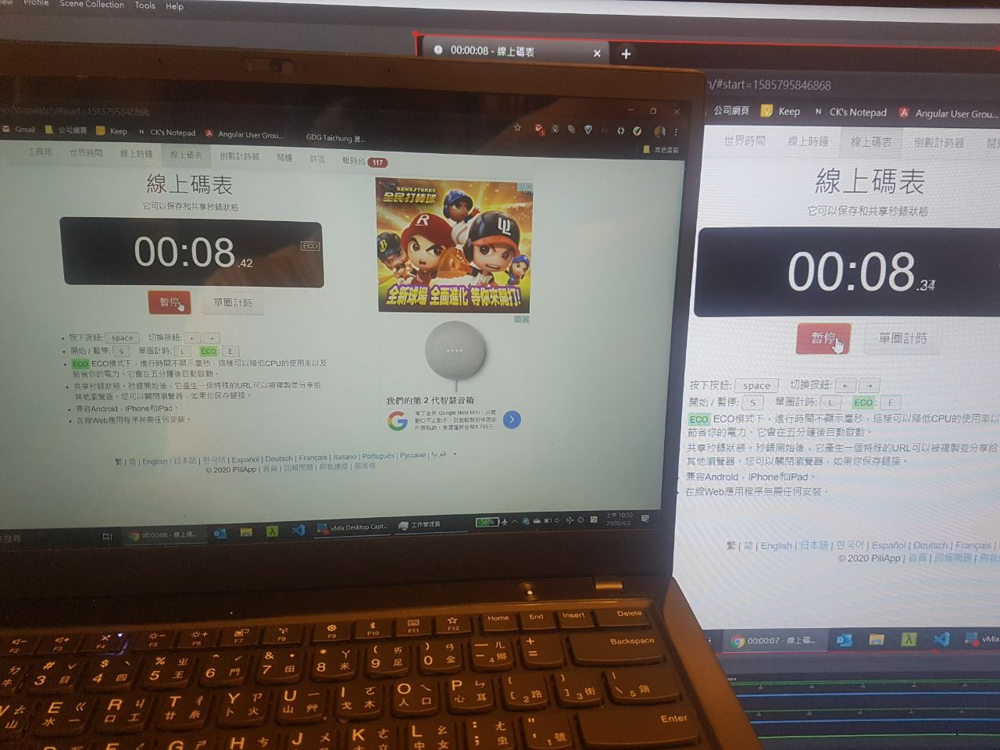

[OBS 技巧筆記] OBS-NDI
OBS 是一套功能強大而且免費的直播軟體，我會將一些我覺得不錯的功能寫成筆記分享出來，今天先介紹 OBS-NDI 這個擴充功能。
NDI 是 NewTek 這間公司發展出來的一個網路協定，全名是 Network Device Interface，詳細功能就讓各位去查了，簡單的說，他可以將影像訊號透過網路的方式傳遞，而且中間的延遲非常的低
而 OBS 當然也有人寫擴充套件，讓 OBS 也能支援 NDI 這個功能，套件名稱是 obs-ndi，還沒有安裝的，就先按網站的步驟安裝下載吧，windows/mac 都可以使用
當安裝完 OBS-NDI 後，OBS 就支援 Input/Output NDI Source 的功能了


Input
當要將外部的 NDI Source 加到 OBS 內，可以透過 add NDI Source 的方式完成

當區域網路內有 NDI Source 存在時，Source name 的下拉選單就可以看到該來源的名稱
- Bandwidth: 頻寬使用量，在不使用 NDI|HX 的模式下，選擇 Highest 的可以取的高畫質低延遲的影像，這裡指的低延遲，大概就一個 frame 的延遲，但頻寬使用就很高，這也是為什麼一定要在使用有線網路的環境下跑
- 其他的設定基本上預設就可以了
按下 Ok 完成後，剩下的操作就跟其他 OBS 的操作一樣，很簡單的
Output
如果想要讓 OBS 所設定好的畫面輸出給其他支援 NDI 的軟體或介面使用的話，可以開啟 output 的功能

當開啟 Output 時，OBS 也會認定目前處於直播的狀態，所以相關的設定也會被關起來不能被修改。以下為一些可以使用的情境
- NDI Virtual Input: 將 NDI Source 模擬成 Webcam，讓可以使用 webcam 的軟體看到此訊號
- 第二台電腦的直播訊號來源，因為直播需要消耗主機支援，可以透過使用第二台電腦來減少主電腦的資訊損耗，這時候透過 NDI 就可以很簡單的將訊號傳給第二台電腦
- 擷取桌面。給直播主機使用，除了使用 OBS 擷取桌面外，也可以使用這一個軟體
- VMIX Desktop capture 軟體 (下載位置)，使用方式很簡單，下載開啟就可以使用了
- 如果 NDI Source 抓不到，可能是防火牆的問題
Filter
OBS-NDI 還有另外一個很實用的功能，就是可以將某 Source 設定為單獨輸出的 NDI Source，但這邊就需要使用 Filter 的功能


- NDI Name 的地方就是輸出出去的名稱，這樣子除了 Main/Preview 的訊號外，還可額外取得某 Source 的 NDI 訊號
這功能就可以讓設定直播畫面更加有彈性，當然除了影像外，聲音也可以設定一樣的 Filter，但就只有聲音訊號


延遲測試
